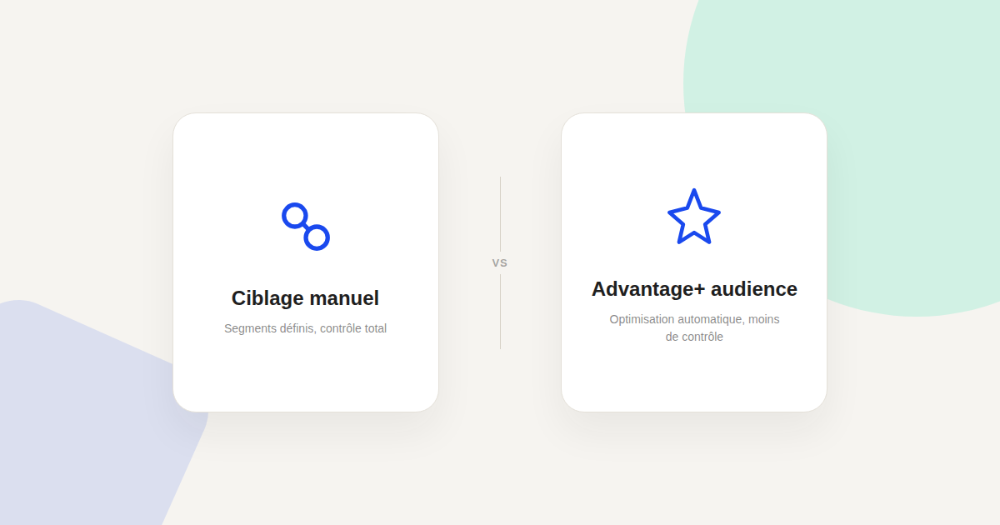
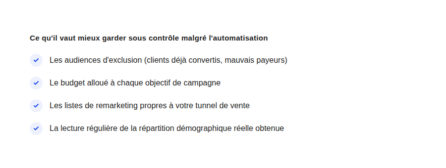

Meta Ads : segmenter ses audiences sans tout miser sur le ciblage automatique
« Advantage+ audience trouve tout seul les bonnes personnes » — c'est vrai la moitié du temps, et c'est l'autre moitié qui coûte cher quand on a laissé filer tout contrôle de segmentation sans y penser.

Meta pousse depuis plusieurs années vers des outils de ciblage de plus en plus automatisés — Advantage+ audience en tête, qui promet de trouver les bonnes audiences sans qu'on ait besoin de définir des segments manuels. Le résultat est réel une partie du temps : l'algorithme trouve effectivement des audiences pertinentes qu'un ciblage manuel n'aurait pas explorées. Mais « laisser faire » entièrement sans aucun garde-fou est une autre affaire.
Ce que l'automatisation fait réellement bien
Advantage+ audience excelle à explorer un espace de ciblage plus large que ce qu'un humain définirait manuellement, en identifiant des signaux de conversion que le ciblage par centres d'intérêt classique ne capture pas toujours. Sur un compte avec un volume de conversions suffisant pour que l'algorithme apprenne correctement, cette exploration élargit souvent la performance au-delà de ce qu'un ciblage manuel obtiendrait seul.
Ce qu'il ne faut jamais lui laisser gérer seul
Les audiences d'exclusion
Sans exclusion explicite des clients déjà convertis ou des audiences à écarter (mauvais payeurs identifiés, personnel interne), l'algorithme continue de diffuser des annonces à ces publics — un gaspillage de budget pur qui n'a rien à voir avec une question de performance, juste une question de bon sens à paramétrer manuellement.
Les listes de remarketing propres à votre tunnel
Un panier abandonné, un visiteur de page de prix, un lead qui n'a pas répondu : ces segments propres à votre tunnel de vente restent plus précis que ce que l'automatisation générale peut déduire seule. Ce sont des données de première main sur votre propre entonnoir, pas des signaux génériques que Meta peut reconstituer seul.

Le réflexe à garder : vérifier la répartition obtenue
Même en utilisant le ciblage automatique, vérifier régulièrement la répartition démographique et par centre d'intérêt réellement atteinte reste indispensable : l'algorithme peut dériver vers des audiences peu pertinentes si le signal de conversion qu'il reçoit est bruité ou insuffisant. Cette vérification ne remet pas en cause l'automatisation — elle sert de filet de sécurité pour la corriger si besoin, plutôt que de découvrir la dérive plusieurs semaines plus tard.
La bonne répartition entre automatisation et contrôle
Dans la pratique, la combinaison la plus fiable consiste à laisser Advantage+ audience explorer largement, tout en gardant la main sur les exclusions et les listes de remarketing propres à votre tunnel — jamais l'inverse. Ce n'est pas une question de méfiance envers l'automatisation, c'est une question de garder le contrôle sur ce que seule votre connaissance du business peut vraiment apporter.
FAQ
Faut-il un budget minimum pour qu'Advantage+ audience fonctionne bien ?
Comme pour toute fonctionnalité automatisée de Meta, un volume de conversions suffisant est nécessaire pour que l'algorithme apprenne correctement — un compte avec très peu de conversions mensuelles bénéficiera moins de cette automatisation.
Peut-on revenir à un ciblage 100% manuel après avoir testé Advantage+ ?
Oui, rien n'empêche de revenir en arrière, mais chaque changement de méthode de ciblage relance généralement une phase d'apprentissage, à anticiper dans le calendrier de campagne.
Les audiences d'exclusion ralentissent-elles l'apprentissage de l'algorithme ?
Non, elles réduisent simplement le périmètre exploré aux audiences pertinentes — c'est un filtre de bon sens qui améliore généralement la qualité du signal plutôt que de le dégrader.
Envie d'un audit de votre stratégie de ciblage Meta Ads ?
Pour aller plus loin, voir la page SMA, et l'article Retargeting.
Pour continuer sur ce sujet.